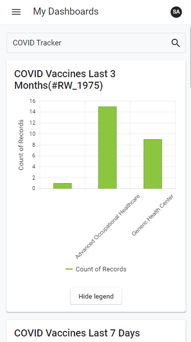

To access the My Dashboards view, select My Dashboards from the side menu or from the Home view. The first time you access My Dashboards, you will be presented with a welcome message that will instruct you to select a dashboard.
Click the Magnifying Glass icon to search for a dashboard. You will be presented with a list of dashboards that have been granted to your role. Select a dashboard to view it.

Each of the indicators on a dashboard (except for the number only, table, and map type indicators) will have a Show legend / Hide legend at the bottom. If you click Show legend, the indicator will open in full-screen mode and display a legend. If you click Hide legend, the legend will be hidden again.
If you are using a desktop or laptop computer, click the Full Screen icon at the top right of an indicator to view it in full screen mode. If you are using a tablet or mobile device, simply tap an indicator to view it in full screen.
To exit full screen mode, click X at the top right.
Each time you access My Dashboards, the view will display the dashboard you last accessed.